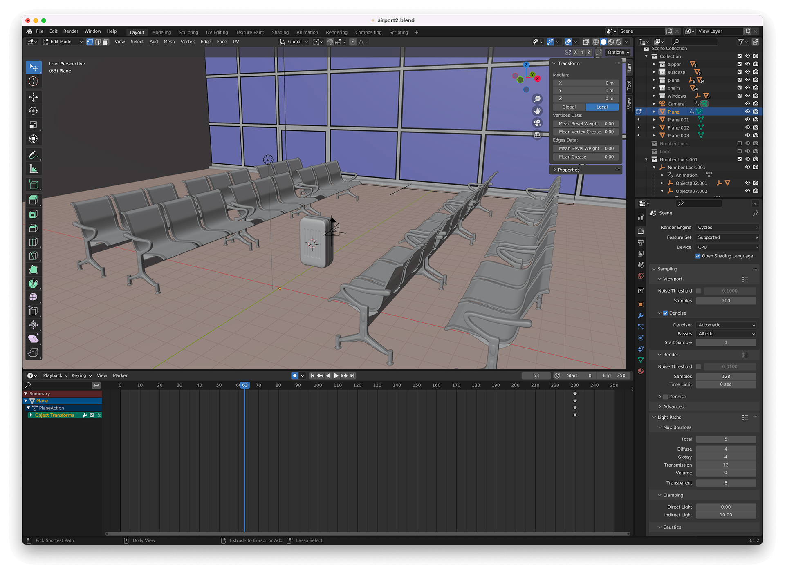
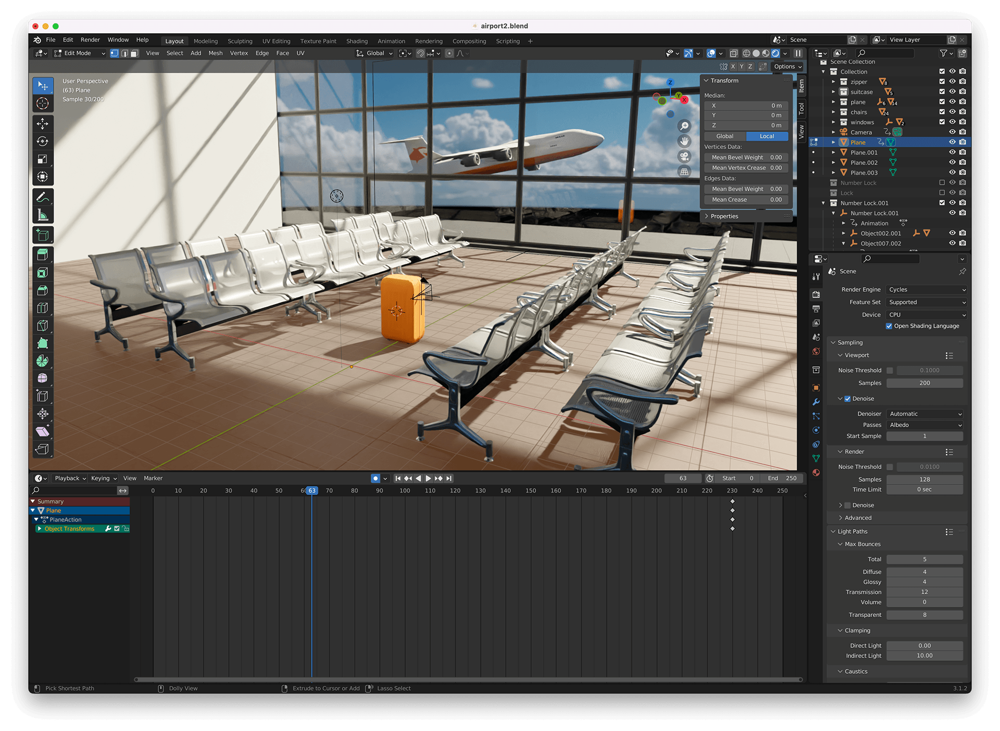
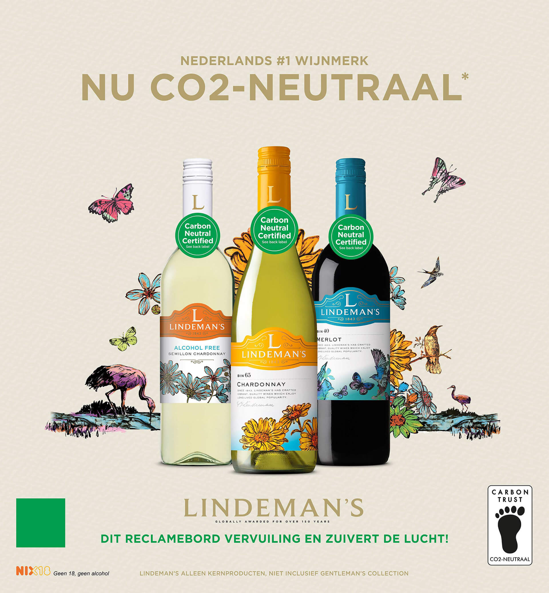
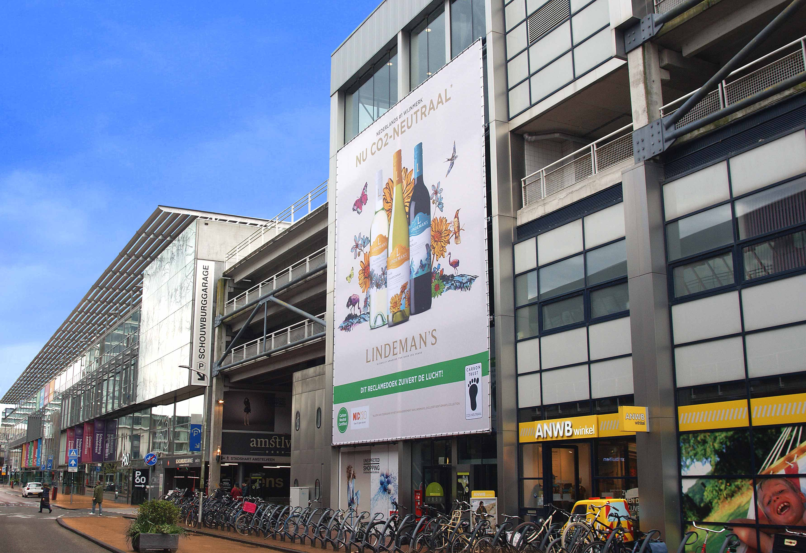
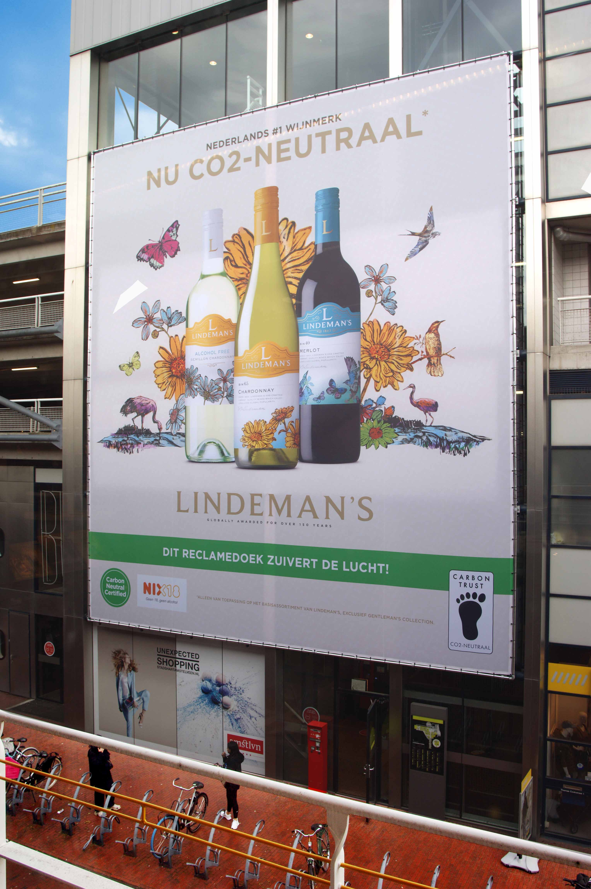
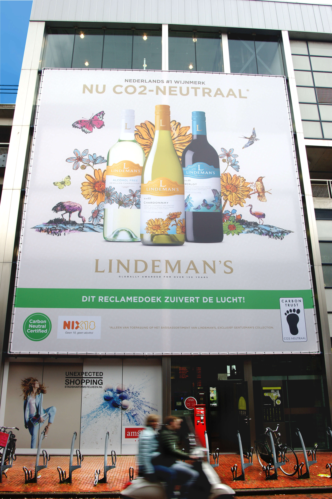
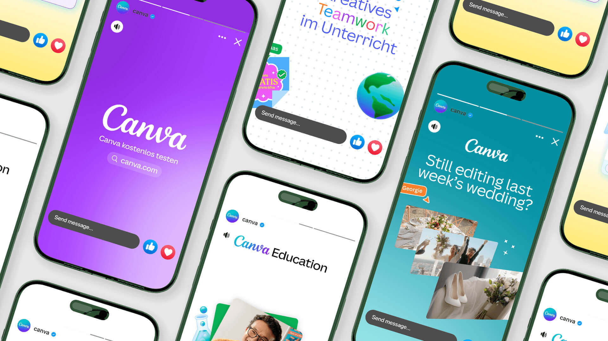
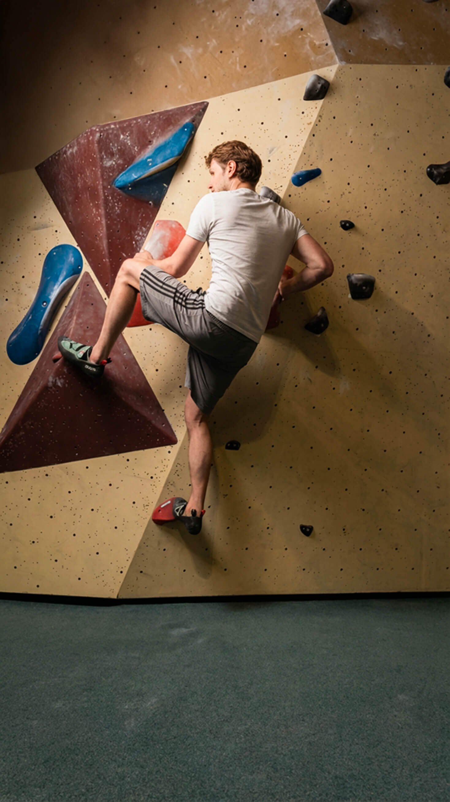

Nico
Boerhof
Nice to meet you! I'm Nico Boerhof, a digital creative designer with over 15 years of experience developing and producing visual content and campaigns. I work at the intersection of concept, design and production.
In my work, I don't think in individual assets but in formats and campaigns. I develop concepts, translate them into concrete productions and safeguard the creative vision from start to finish. Whether it's social content, campaigns or branded video — I make sure the story is right, visually strong and connects with the audience. I regularly take creative direction during productions and work closely with other disciplines to achieve the best result. AI is a natural part of my creative process — for concept development, visualisation and accelerating workflows, freeing up more space for creativity and quality.
Over the past years I've worked for international brands including Škoda, Tommy Hilfiger, FrieslandCampina, L'Oréal, Philips and Bol.com. In these projects, the focus wasn't just on execution, but on translating brand stories into consistent and scalable content.
experience
brands
agencies
ideas
My Motivation
What draws me to this role at Addurance is the combination of
concept development, motion design and creating digital content for diverse campaigns. Bringing brands
to life through strong visuals and storytelling — and making a direct impact across different channels
— is something that truly excites me.
As a freelancer, I'm looking for an assignment where I can apply my experience as a digital creative
within a team. Working together on creative concepts and content that are not only visually strong,
but also tailored to platforms like social — with room for experimentation, speed and leveraging
new tools like AI.
Previous work.
A selection of projects where I was responsible for concept, execution and production — from social video to 3D visualisation.
Education
Consumer
Pro / SMB
Print Products
Photo Editor
Pro / SMB






My
Skills
Software & skills I use every day.

Selected
Work
An overview of my professional background.
From concept to creation: I develop and produce visual stories that move. From motion graphics and promotional videos to interactive productions and digital campaigns. I work independently when needed, but I also thrive in creative teams — always with a sharp eye for detail, experience and impact.
Development of motion graphics and social content for brands including Bol.com, Staatsloterij and TOTO. Alongside visual creation, I worked on HTML5 display banner tooling in close collaboration with the development team — with a focus on smart, scalable and efficient production.
Digital concepts translated into fully functioning advertisements for FrieslandCampina, L'Oréal, Nationale Postcode Loterij and MediaMarkt. Video, HTML banners, landing pages and VR.
From Flash to After Effects — editing and creating video animations, plus camera and sound operator experience.
Bridge between design and development. Designs translated into interactive web applications, building JavaScript programming skills.
Professional
qualities
Down-to-earth, creative and with a sense of humour.

In my free time I love spending time with my girlfriend and our 8-year-old daughter. I enjoy travelling, watching films, surfing, working out and bouldering.
Shall we connect?